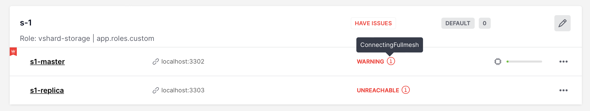

Troubleshooting¶
First of all, see a similar guide in the Tarantool manual. Below you can find other Cartridge-specific problems considered.
Contents
Problems with replica¶
Examples:
Missing .xlog file between LSN 5137088 {1: 240379, 2: 4750534, 5: 146175} and 5137379 {1: 240379, 2: 4750825, 5: 146175} which means that master lost one or more of their xlog files, please check itDuplicate key exists in unique index "primary" in space "T1" with old tuple
Solution:
If you have some replication conflicts and issues that you don’t know how to deal with, try to rebootstrap the replica.
(!) Make sure that you have your data safe on the master before rebootstrap.
Stop the instance
Delete snapshots and xlogs
Preserve cluster-wide config (
configdir)Restart the instance
Editing clusterwide configuration in WebUI returns an error¶
Examples:
NetboxConnectError: "localhost:3302": Connection refused;Prepare2pcError: Instance state is OperationError, can't apply config in this state.
The root problem: all cluster instances are equal, and all of them store a copy of clusterwide configuration, which must be the same. If an instance degrades (can’t accept new configuration) – the quorum is lost. This prevents further configuration modifications to avoid inconsistency.
But sometimes inconsistency is needed to repair the system, at least partially and temporarily. It can be achieved by disabling degraded instances.
Solution:
Connect to the console of the alive instance.
tarantoolctl connect unix/:/var/run/tarantool/<app-name>.<instance-name>.control
Inspect what’s going on.
cartridge = require('cartridge') report = {} for _, srv in pairs(cartridge.admin_get_servers()) do report[srv.uuid] = {uri = srv.uri, status = srv.status, message = srv.message} end return report
If you’re ready to proceed, run the following snippet. It’ll disable all instances which are not healthy. After that, you can use the WebUI as usual.
disable_list = {} for uuid, srv in pairs(report) do if srv.status ~= 'healthy' then table.insert(disable_list, uuid) end end return cartridge.admin_disable_servers(disable_list)
When it’s necessary to bring disabled instances back, re-enable them in a similar manner:
cartridge = require('cartridge') enable_list = {} for _, srv in pairs(cartridge.admin_get_servers()) do if srv.disabled then table.insert(enable_list, srv.uuid) end end return cartridge.admin_enable_servers(enable_list)
An instance is stuck in the ConnectingFullmesh state upon restart¶
Example:
{kind=link}
The root problem: after restart, the instance tries to connect to all
its replicas and remains in the ConnectingFullmesh state until it
succeeds. If it can’t (due to replica URI unavailability or for any
other reason) – it’s stuck forever.
Solution:
Set the replication_connect_quorum option to zero. It may be accomplished in two ways:
By restarting it with the corresponding option set (in environment variables or in the instance configuration file);
Or without restart – by running the following one-liner:
echo "box.cfg({replication_connect_quorum = 0})" | tarantoolctl connect \ unix/:/var/run/tarantool/<app-name>.<instance-name>.control
I want to run an instance with a new advertise_uri¶
The root problem: advertise_uri parameter is persisted in the
clusterwide configuration. Even if it changes upon restart, the rest of the
cluster keeps using the old one, and the cluster may behave in an odd way.
Solution:
The clusterwide configuration should be updated.
Make sure all instances are running and not stuck in the ConnectingFullmesh state (see above).
Make sure all instances have discovered each other (i.e. they look healthy in the WebUI).
Run the following snippet in the Tarantool console. It’ll prepare a patch for the clusterwide configuration.
cartridge = require('cartridge') members = require('membership').members() edit_list = {} changelog = {} for _, srv in pairs(cartridge.admin_get_servers()) do for _, m in pairs(members) do if m.status == 'alive' and m.payload.uuid == srv.uuid and m.uri ~= srv.uri then table.insert(edit_list, {uuid = srv.uuid, uri = m.uri}) table.insert(changelog, string.format('%s -> %s (%s)', srv.uri, m.uri, m.payload.alias)) break end end end return changelog
As a result you’ll see a brief summary like the following one:
localhost:3301> return changelog --- - - localhost:13301 -> localhost:3301 (srv-1) - localhost:13302 -> localhost:3302 (srv-2) - localhost:13303 -> localhost:3303 (srv-3) - localhost:13304 -> localhost:3304 (srv-4) - localhost:13305 -> localhost:3305 (srv-5) ...
Finally, apply the patch:
cartridge.admin_edit_topology({servers = edit_list})
The cluster is doomed, I’ve edited the config manually. How do I reload it?¶
Warning
Please be aware that it’s quite risky and you know what you’re doing. There’s some useful information about clusterwide configuration anatomy and “normal” management API.
But if you’re still determined to reload the configuration manually, you can do (in the Tarantool console):
function reload_clusterwide_config()
local changelog = {}
local ClusterwideConfig = require('cartridge.clusterwide-config')
local confapplier = require('cartridge.confapplier')
-- load config from filesystem
table.insert(changelog, 'Loading new config...')
local cfg, err = ClusterwideConfig.load('./config')
if err ~= nil then
return changelog, string.format('Failed to load new config: %s', err)
end
-- check instance state
table.insert(changelog, 'Checking instance config state...')
local roles_configured_state = 'RolesConfigured'
local connecting_fullmesh_state = 'ConnectingFullmesh'
local state = confapplier.wish_state(roles_configured_state, 10)
if state == connecting_fullmesh_state then
return changelog, string.format(
'Failed to reach %s config state. Stuck in %s. ' ..
'Call "box.cfg({replication_connect_quorum = 0})" in instance console and try again',
roles_configured_state, state
)
end
if state ~= roles_configured_state then
return changelog, string.format(
'Failed to reach %s config state. Stuck in %s',
roles_configured_state, state
)
end
-- apply config changes
table.insert(changelog, 'Applying config changes...')
cfg:lock()
local ok, err = confapplier.apply_config(cfg)
if err ~= nil then
return changelog, string.format('Failed to apply new config: %s', err)
end
table.insert(changelog, 'Cluster-wide configuration was successfully updated')
return changelog
end
reload_clusterwide_config()
This snippet reloads the configuration on a single instance. All other instances continue operating as before.
Note
If further configuration modifications are made with a two-phase commit (e.g. via the WebUI or with the Lua API), the active configuration of an active instance will be spread across the cluster.
Repairing cluster using Cartridge CLI repair command¶
Cartridge CLI has repair command since version 2.3.0.
It can be used to get current topology, remove instance from cluster, change replicaset leader or change instance advertise URI.
Note
cartridge repair patches the cluster-wide configuration files of
application instances placed ON THE LOCAL MACHINE. It means that running
cartridge repair on all machines is user responsibility.
Note
It’s not enough to apply new configuration: the configuration should be
reloaded by the instance. If your application uses cartridge >= 2.0.0,
you can simply use --reload flag to reload configuration. Otherwise, you
need to restart instances or reload configuration manually.
Changing instance advertise URI¶
To change instance advertise URI you have to perform these actions:
Start instance with a new advertise URI. The easiest way is to change
advertise_urivalue in the instance configuration file).Make sure instances are running and not stuck in the ConnectingFullmesh state (see above).
Get instance UUID:
open
server detailstab in WebUI;call
cartridge repair list-topology --name <app-name>and find desired instance UUID:get instance
box.info().uuid:
echo "return box.info().uuid" | tarantoolctl connect \ unix/:/var/run/tarantool/<app-name>.<instance-name>.control
Now we need to update instance advertise URI in all instances cluster-wide configuration files on each machine. Run
cartridge repair set-advertise-uriwith--dry-runflag on each machine to check cluster-wide config changes computed bycartridge-cli:cartridge repair set-advertise-uri \ --name myapp \ --dry-run \ <instance-uuid> <new-advertise-uri>
Run
cartridge repair set-advertise-uriwithout--dry-runflag on each machine to apply config changes computed bycartridge-cli. If your application usescartridge >= 2.0.0, you can specify--reloadflag to load new cluter-wide configuration on instances. Otherwise, you need to restart instances or reload configuration manually.cartridge repair set-advertise-uri \ --name myapp \ --verbose \ --reload \ <instance-uuid> <new-advertise-uri>
Changing replicaset leader¶
You can change replicaset leader using cartridge repair command.
Get replicaset UUID and new leader UUID (in WebUI or by calling
cartridge repair list-topology --name <app-name>).Now we need to update cluster-wide config for all instances on each machine. Run
cartridge repair set-leaderwith--dry-runflag on each machine to check cluster-wide config changes computed by `` cartridge-cli``:cartridge repair set-leader \ --name myapp \ --dry-run \ <replicaset-uuid> <instance-uuid>
Run
cartridge repair set-advertise-uriwithout--dry-runflag on each machine to apply config changes computed bycartridge-cli. If your application usescartridge >= 2.0.0, you can specify--reloadflag to load new cluter-wide configuration on instances. Otherwise, you need to restart instances or reload configuration manually.cartridge repair set-leader \ --name myapp \ --verbose \ --reload \ <replicaset-uuid> <instance-uuid>
Removing instance from the cluster¶
You can remove instance from cluster using cartridge repair command.
Get instance UUID:
open
server detailstab in WebUI;call
cartridge repair list-topology --name <app-name>and find desired instance UUID:get instance
box.info().uuid:
echo "return box.info().uuid" | tarantoolctl connect \ unix/:/var/run/tarantool/<app-name>.<instance-name>.control
Now we need to update cluster-wide config for all instances on each machine. Run
cartridge repair remove-instancewith--dry-runflag on each machine to check cluster-wide config changes computed bycartridge-cli:cartridge repair remove-instance \ --name myapp \ --dry-run \ <replicaset-uuid>
Run
cartridge repair remove-instancewithout--dry-runflag on each machine to apply config changes computed bycartridge-cli. If your application usescartridge >= 2.0.0, you can specify--reloadflag to load new cluter-wide configuration on instances. Otherwise, you need to restart instances or reload configuration manually.cartridge repair set-leader \ --name myapp \ --verbose \ --reload \ <replicaset-uuid> <instance-uuid>